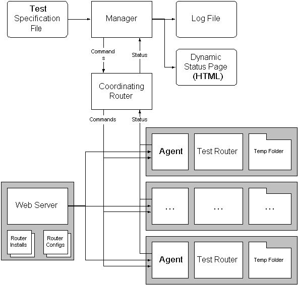

PerfTest Framework
Jeff Barr - jeff@vertexdev.com
Introduction / Architecture / Language / Setup / Running / Code
This document describes PerfTest, a testing package for the PubSub Server product line. PerfTest simplifies the process of setting up and running a test on a complex and heterogeneous network of test machines. A procedural test specification language is used to describe each test. A flexible mapping model allows a single test specification to take advantage of a pool of available test machines. To simplify test case generation and administration, each test is described using a single file. The Agents are dynamically configured using the test specification as needed.
PerfTest uses a Manager/Agent architecture. A given test setup will have a single Manager and any number of Agents. A PubSub Server is used to handle communication between the Manager and the Agents. This router is known as the coordinating router and is distinct from the router or routers to be tested. By using several coordinating routers on a single network, multiple parallel test setups can be built.
The Manager issues commands (either to a single Agent or to all Agents) and the Agents respond (asynchronously) with status reports. Each Agent also sends a "heartbeat" message to the Manager each second. The Manager maintains a central status table with the latest information received from each Agent. This information is published each second as a very simple HTML table.
The overall architecture can be diagrammed as follows:

Communication from the Manager to the Agents is always done on topic /ktest/agent_command. Communication from the Agents to the Manager is always done on topic /ktest/agent_status. These values can be changed in file Common.java if necessary.
When an Agent is started on a particular machine it performs the following actions:
The names are unique within the network, and will be unique even if multiple Agents are started on the same system, as long as they are started at different times (the unique name includes the time down to the millisecond level). This scheme allows a single system to host any number of Agents.
Each Agent maintains its own set of named counters. The counters are typically used to tabulate the events received as a result of a publishing operation performed on a router.
The Manager can instruct any Agent to download files from an arbitrary URL into the Agent's local temporary directory. These files can be configuration files, router installation packages or scripts, or any other files. Each agent clears and then deletes its temporary directory when it exits.
Agents have an extensive repertoire of commands:
| ClearRouter | Publish | StartRouter |
| ConfigRouter | ReportCounters | StopRouter |
| DeleteCounters | ResetCounters | Subscribe |
| Download | Route | |
| Exit | Run |
At any given time, an Agent is either executing a command, or it is idle. The heartbeat message always includes the status of the agent. Commands sent to an Agent while it is not idle will be queued up and run as soon as possible.
An Agent will typically remain running over the course of several tests.
Each Agent listens on topic /ktest/agent_command for commands. Each command contains an AgentID field. If this field is empty then the command applies to all agents. Otherwise, it applies to the Agent with the given AgentID. The Manager effectively broadcasts all commands; the Agents are each responsible for deciding which commands are applicable and responding accordingly.
Command processing in the Agent is straightforward. The command is received and decoded. If it applies to the agent, then the Agent's status is changed to reflect the command, the command is run, a status message is sent to the Manager, and the Agent's status is returned to reflect the fact that the Agent is now idle. Certain very simple commands do not return status to the Manager.
As noted previously, each Agent can contain any number of named counters. The counters are used to tabulate the number of events received on a topic (or multiple topics). The Agents report the contents of the counters back to the Manager on demand.
A single Agent can subscribe to any number of topics on a single thread.
A single Agent can publish to any number of topics on any number of threads.
Each Agent typically supervises the activity on a single machine, although a single machine can definitely host more than one Agent. The
When a Manager is started it performs the following series of actions:
The Manager generates a log file (manager.log) and a dynamic status file (agent.html). The log file records the status of each command as returned from the Agents; the dynamic status file records the state of each agent. The dynamic status file is updated each second. It contains a page containing a simple HTML table, along with a REFRESH tag. The page refreshes itself every 5 seconds (this can be changed in file StatusUpdater.java if desired).
The Manager reads and processes a specification file when it starts. The specification file contains a series of procedural directives to drive a test. Some directives are run in the Manager; most run in the Agents. The specification does not assume any particular testing model. Instead, it was designed to provide flexibility sufficient to perform many different types of tests.
The specifications are designed to be somewhat independent of the actual AgentIDs, operating systems, and platform types used to run a particular test. A series of "binding" statements are used to connect abstract agent names with actual Agents in the specification file. The bindings can be specific or general.
Directives in the specification file are processed in the order that they are encountered in the file.
The specification file is a simple text file. Blank lines are ignored, as are lines starting with the "#" (comment) symbol. White space is permitted before the comment symbol.
Commands in the file each occupy a single line. Commands can be preceded by and can contain white space. Certain commands accept arguments, and these must be given in the exact form noted below. In particular, a few commands require double quotation marks around their arguments. These must not be supplied where they are not expected.
The following commands are available. Italic text represents generic information that must be replaced with information specific to the test.
|
Command |
Where Run |
Description |
||
| print "message" | Manager | Displays the given message. | ||
| agent name "operating_system" agent name * agent name "operating_system" host agent name * host |
Manager | Assigns an agent from the pool of available agents. The name is arbitrary and is meaningful only within the specification. The operating_system is matched on a prefix basis -- "Windows" matches "Windows XP", "Windows 2000", and so forth. Possible matches for this value are reported by the Agents and shown on the dynamic status page. Likely values are "Windows", "Linux", and "Solaris". If the * character is used then any operating system is matched. If a host name is provided then it must match exactly. | ||
| download name "url" "file" download * "url" "file" |
Agent | Downloads the information at the specified url to the indicated file on all Agents (*) or the specified Agent. | ||
| run name "command arguments" run * "command arguments" |
Agent | Runs the given command with the given arguments on all Agents (*) or the specified Agent. The author of the specification is responsible for making sure that the command is reasonable for the target agent or agents. | ||
| configure_router name "url" configure_router * "url" |
Agent | Downloads the information at the given url and stores it in the default location as the router configuration file using the standard name (knrouter.conf). | ||
| start_router name start_router * |
Agent | Starts the router on all Agents (*) or the specified Agent. | ||
| clear_persistence name clear_persistence* |
Agent | Clear router persistence files (in the default location) on all Agents (*) or the specified Agent. | ||
| stop_router name stop_router * |
Agent | Stops the router on all Agents (*) or the specified Agent. | ||
| wait_idle | Manager | Wait for all Agents to have the Idle status before proceeding. | ||
| sleep seconds | Manager | Sleep for the indicated number of seconds before proceeding. | ||
| make_routes name router src dest start end n make_routes * from src dest start end n |
Agent | Instruct the given Agent or all Agents (*) to tell the given router to construct routes using the given parameters. Src is the source topic and Dest is the destination topic. Start and End are an integer range appended to the destination topic. N is an integer value for the number of values (1..N) to append to the source topic. | ||
| subscribe name router topic counter | Agent | Instruct the given agent to listen on the given topic for events, and to tabulate them in the named counter. Any number of topics can feed in to a single counter. | ||
| publish name router threads dest count size delay publish * router threads dest count size delay |
Agent | Intruct to given agent or all agents (*) to publish through the given router using the given parameters. Threads is the number of threads to run in the agent. Dest is the destination topic. Count is the number of items to publish per thread, and size is the payload size of each item. Delay is the millisecond delay between publications. If delay is 0 then items will be sent at machine/router/network speed. Routers configured to receive events will count and measure them using the per-Agent/per-topic counters. | ||
| delete_counters * delete_counters name |
Agent | Delete all of the counters in the given Agent or all Agents (*). | ||
| reset_counters * reset_counters name |
Agent | Reset (zero) all of the counters in the given Agent or all Agents (*). | ||
| get_counters * get_counters name |
Agent | Get the contents (name and count) of each counter from the given Agent or all Agents (*) to the Manager. | ||
Here is a specification for a very simple test:
PerfTest is written in pure Java and contains a minimal amount of code that is specific to any particular platform. The Java runtime libraries must be installed on each machine that is to run the Manager or an Agent.
The PubSub Server designated as the coordinating router must be installed and operational.
The code directory contains a simple Makefile. The Makefile assumes that the CLASSPATH has been set to the proper value for the system. The CLASSPATH must point to two items: The Java Micro Server (JMS) and the current directory.
PerfTest requires version 1.4 or better of the Java Runtime Environment (JRE).
PerfTest is supplied in a single ZIP file. Install it as follows:
Running a test is quite simple:
This section provides an overview of the source code and outlines some development and porting issues.
Communication from Manager to Agents and back is via events posted to the coordinating router. The Manager and the Agents have the ability "throw" simple Java objects from place to place. File KSerializer.java implements a pair of static functions which turn a Java object into a router payload string and a router payload string back in to a Java object. The Java objects can have public fields of type int or String. All other types are illegal and will generate a runtime error.
All files named Command*.java are serializable commands that are sent from the Manager to one or to all Agents. By convention, if the AgentID field is the empty string then all Agents will respond to the command. Otherwise, only the Agent with the given AgentID will respond.
All files named Status*.java are serializable status reports that are send from the Agents to the Manager. Most (not all) of the Command objects elicit a status response; some very simple commands do not. The file AgentData.java is also a status object. AgentData objects are sent from Agent to Manager to keep the Manager apprised of the status of the Agent.
The Router.java file and the Router*.java files handle non-portable operations on an installed router. In Router.java, the static GetRouter method returns an instance of a specific Router class (e.g. RouterWindows, RouterLinux, or RouterSolaris) based on the operating system and platform architecture. Router.java must be customized to handle additional operating systems and platforms. This is a simple matter of customizing the GetRouter function.
The Manager is comprised of Manager.java, AgentDataMap.java, StatusUpdaterThread, and TestSpec.java. Manager.java is the implementation of the Manager. The AgentDataMap stores the AgentData values received from the Agents. TestSpec.java is the implementation of the storage, parsing, and execution of a test specification. StatusUpdaterThread is the thread which generates the dynamic status page.
The Agent is comprised of Agent.java, HeartbeatThread.java, Heartbeat.java, and PublisherThread.java files. Agent.java is the implementation of the Agent. The HeartbeatThread sends the agent status to the Manager using the Heartbeat object. The PublisherThread is used to implement the multiple threads of execution needed by the publish command.